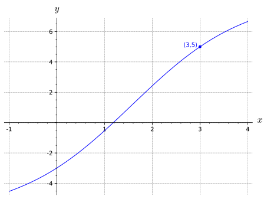

Seção 2 Equações Diferenciais
Subseção 2.1 Curvas Integrais
Na Figura 2.2 mostramos as curvas integrais da função \(f(x)=x^2\) para alguns valores da constante \(C\text{.}\) Observe que as curvas integrais são translações 1 da curva \(y=\frac{1}{3}x^3\text{.}\)
Exemplo 2.3. Curvas integrais.
(a)
Encontre a equação da curva integral, \(y=y(x)\text{,}\) da função \(f(x)=x\) que passe pelo ponto \((2,1)\text{.}\)
Solução.
Segue da Definição 2.1 que a curva integral de um função \(f(x)\) é a sua primitiva mais uma constante. Neste caso,
\begin{equation*}
y(x)= \frac{x^2}{2} + C\text{.}
\end{equation*}
O próximo passo é encontra o valor de \(C\) que garanta que qua a curva integral passe pelo ponto \((2,1)\text{.}\) Para isso, fazemos
\begin{equation*}
y(2)= \frac{2^2}{2} + C = 1
\end{equation*}
e obtemos \(C=-1\text{.}\) Portanto,
\begin{equation*}
y=\frac{x^2}{2} -1
\end{equation*}
é a curva solicitada.
(b)
Encontre a equação da curva integral, \(y=y(x)\text{,}\) da função \(f(x)=x^2\) que passe pelo ponto \((3,1)\text{.}\)
Solução.
Uma vez que \(\frac{x^3}{3}\) é uma primitiva de \(x^2\text{,}\) a curva integral é dada por
\begin{equation*}
y(x)= \frac{x^3}{3} + C\text{.}
\end{equation*}
O valor de \(C\) para que a curva integral passe pelo ponto \((3,1)\) satisfaz
\begin{equation*}
y(3)= \frac{3^3}{3} + C = 1\text{,}
\end{equation*}
logo \(C=-8\text{.}\) Portanto,
\begin{equation*}
y=\frac{x^3}{3} -8
\end{equation*}
é a curva solicitada.
Exercício de Verificação 2.4.
Encontre a equação da curva integral, \(y=y(x)\text{,}\) da função \(f(x)=2x-2\) que passe pelo ponto \((1,2)\text{.}\)
Dica.
Revise Exemplo 2.3.
Resposta.
\(y=x^2-2x+3\text{.}\)
Subseção 2.2 Integral e Equações diferenciais
Uma equação diferencial é uma igualdade matemática que envolve derivadas e uma função desconhecida \(y(x)\text{.}\) Por exemplo, a igualdade
\begin{gather*}
\frac{\dd y}{\dd x} = x^2
\end{gather*}
é uma equação diferencial. Nesse caso, a função desconhecida \(y(x)\) pode ser encontrada usando a integral indefinida como a seguir
\begin{gather*}
y(x) = \integral{x^2}{x}=\frac{1}{3}x^3 +C.
\end{gather*}
Portanto, dizemos que a função \(y(x)=\frac{1}{3}x^3 +C\) é uma solução geral da equação diferencial \(\frac{\dd y}{\dd x} = x^2\text{.}\) De forma geral, dada uma função conhecida \(f(x)\) a igualdade
\begin{gather}
\frac{\dd y}{\dd x} = f(x)\tag{2.1}
\end{gather}
\begin{gather}
y(x)=\integral{f(x)}{x}\text{.}\tag{2.2}
\end{gather}
Resolvendo equações diferênciais.
Exemplo 2.5.
Encontre a solução geral da equação diferencial \(\frac{\dd y}{\dd x} = \cos{x}\text{.}\)
Solução.
Já que \(\sin{x}\) é uma primitiva de \(\cos{x}\text{,}\) a solução para a equação diferencial é
\begin{equation*}
y(x) = \sin{x} + C.
\end{equation*}
Exemplo 2.6.
Resolva a equação diferencial \(\frac{\dd y}{\dd x} = 2 + \sin{x}\text{.}\)
Solução.
Resolver a equação diferencial \(\frac{\dd y}{\dd x} = 2 + \sin{x}\) é equivalente a obter a integral
\begin{align*}
y(x) \amp = \integral{\left(2+ \sin{x}\right)}{x} \amp \quad \knowl{./knowl/asse-sol-eq-diferencial.html}{\text{Fórmula da solução geral}} \\
\amp =\integral{2}{x} + \integral{\sin{x}}{x}\\
\amp = 2x -\cos{x} + C\text{.}
\end{align*}
Exercício de Verificação 2.7.
Encontre a solução geral da equação \(\frac{\dd y}{\dd t}=10e^t\text{.}\)
Dica.
Revise Exemplo 2.6.
Resposta.
\(y(t)= 10e^t + C\text{.}\)
Problema de valor inicial.
Frequentemente estamos interessados em encontrar uma única solução para a equação diferencial. Por exemplo, no Exemplo 2.3 encontramos a equação para uma curva integral que passa por \((2,1)\text{.}\) O Problema de encontrar uma função \(y(x)\text{,}\) que satisfaça (2.1) e cuja curva integral passa pelo ponto \((x_0,y_0)\) é denominado problema de valor inicial e geralmente apresentado da forma
\begin{gather}
\frac{\dd y}{\dd x}=f(x), \qquad y(x_0)=y_0\tag{2.3}
\end{gather}
Resolvendo problemas de valor inicial.
Exemplo 2.8.
Resolva o seguinte problema de valor inicial
\begin{gather*}
\frac{\dd y}{\dd x}=\cos{x}, \qquad y(0)=0 \text{.}
\end{gather*}
Solução.
No Exemplo 2.5 encontramos a solução geral \(y(x)=\sin{x}+C\) da equação diferencial \(\frac{\dd y}{\dd x}=\cos{x}\text{.}\) Para resolver o problema de valor inicial deve-se obter o valor de \(C\) para que \(y(0)=0\text{.}\) Nota-se que \(C=0\text{,}\) pois
\begin{equation*}
y(0)=\sin{0} + C=0\text{.}
\end{equation*}
Logo, a curva integral procurada é
\begin{equation*}
y(x)=\sin{x}\text{.}
\end{equation*}
Exemplo 2.9.
Resolva o seguinte problema de valor inicial
\begin{gather*}
\frac{\dd y}{\dd x}= 2+ \sin{x} \qquad y(3)=5 \text{.}
\end{gather*}
Solução.
Sabe-se do Exemplo 2.6 que a solução geral \(y(x)=2x - \cos{x} +C\) da equação diferencial \(\frac{\dd y}{\dd x}= 2+ \sin{x}\text{.}\) Como a curva deve satisfazer \(y(3)=5\text{,}\) obtemos
\begin{equation*}
y(3)=2\cdot 3-\cos{3} + C=5
\end{equation*}
de modo que \(C\) vale
\begin{equation*}
C = 5+\cos{3}-6 \approx -1.99 \quad \color{gray}{\text{calculadora científica}}\text{.}
\end{equation*}
Portanto a solução é
\begin{equation*}
y(x)= 2x - \cos{x} - 1.99\text{.}
\end{equation*}

Exercício de Verificação 2.11.
(a)
Encontre a solução do problema de valor inicial
\begin{equation*}
\frac{\dd y}{\dd t}=10e^t, \quad y(0)=25\text{.}
\end{equation*}
Dica.
Revise Exercício de Verificação 2.7.
Resposta.
\(10e^t + 15\)
(b)
Encontre a solução do problema de valor inicial
\begin{equation*}
\frac{\dd y}{\dd t} = 2+ \sin{t}, \quad y(0)=5\text{.}
\end{equation*}
Dica.
Revise Exemplo 2.9.
Resposta.
\(2t-\cos{t} + 6\)
Subseção 2.2.1 Sugestão de Vídeos
- Equações Diferenciais:
https://youtu.be/xZYZkgOUM7s
Subseção 2.3 Campos de Direções
Sabe-se que a inclinação da reta tangente à curva \(y=y(x)\) em dado ponto \((x, y)\) é dada por \(\dd y/\dd x\) para cada \(x\text{.}\) A Equação (2.1) revela que a inclinação das retas tangentes às curvas integrais de \(f\) no ponto \((x_0, y_0)\) é exatamente \(f(x_0)\text{.}\) Com isso é possível visualizar as "direções" das curvas integrais plotando pequenas porções de suas retas tangentes em cada ponto \((x,y)\) de uma região retangular. Como resultado teremos o que denominamos de campo de direções. Na Figura 2.12–2.13 podemos observar que mesmo não conhecendo a curva integral é possível ter a perspectiva geométrica do seu gráfico.
Tecnologia 2.14. Faça você mesmo.
Subseção 2.4 Sugestão de Vídeos
- Campos de direções:
https://youtu.be/xZYZkgOUM7s
Exercícios 2.5 Exercícios
Grupo de exercícios.
Resolva:
1.
Sabendo que o gráfico de \(f(x)\) passa pelo ponto \(( 4, 10 )\) e que a inclinação de sua reta tangente em \((x,f(x))\) é \(6 x + 7\text{,}\) quanto vale \(f( 4 )\text{?}\)
Resposta.
\(10\)
Solução.
Lembre-se de que o gráfico de \ (f (x) \) passando pelo ponto \((4, 10)\text{,}\) isso simplesmente significa \(f(4) = 10\text{.}\) Similarmente, a inclinação da linha tangente em \(x, f(x)\) sendo \({6}x + 7\) significa que a derivada de \(f\) em \(x\) é esta fórmula. Isto é, \(f'(x) = {6}x + 7\text{.}\)
Agora, encotreamos a primitiva de \(f'(x) = {6}x + 7\text{.}\) Isto é dado por \(f(x) = \frac{6}{2}x^2 + {7}x + C\text{.}\) O fado que \(f(4) = 10\) nos permite obter \(C\) como segue.
\begin{equation*}
\begin{aligned}
f(4) \amp = 10 \\
\frac{6}{2}(4)^2 + {7}(4) + C \amp = 10 \\
\frac{6}{2}(16) + 28 + C \amp = 10 \\
\frac{96}{2} + C \amp = 10 - 28 \\
C \amp = -18-48 \\
C \amp = -66 \\
\end{aligned}
\end{equation*}
Portanto a função \(f(x)\) é dada por:
\begin{equation*}
f(x) = \frac{6}{2}x^2 + {7}x + (-66)
\end{equation*}
Conectando o ponto 4, dá \(f(4) = 10.00\text{.}\)
2.
O problema de valor inicial
\begin{equation*}
y'(x) = \sin x, \quad y(0) = 5
\end{equation*}
\(y(x) =\)
Resposta.
\(-\left(\cos\!\left(x\right)\right)+6\)
Solução.
Note que
\begin{equation*}
y(x) = \int \sin x \, dx = -\cos x + C.
\end{equation*}
Encontre \(C\) usando \(y(0) = 5\text{.}\)
\begin{equation*}
-\cos(0) + C = 5 \;\Rightarrow\; -1 + C = 5
\;\Rightarrow\; C = 6.
\end{equation*}
Logo, \(y(x) = -\cos x + 6\text{.}\)
3.
Mostre que \(y=xe^{-x} + 2\) é uma solução do problema de valor inicial
\begin{equation*}
\frac{\dd y}{\dd x} = (1-x)e^{-x}, \quad y(0)=2.
\end{equation*}
4.
O problema de valor inicial
\begin{equation*}
\dfrac{dy}{d\,x} = 6^x, \quad y(1) = 1
\end{equation*}
\(y(x) =\)
Resposta.
\(\frac{6^{x}}{1.79176}-2.34866\)
Solução.
\begin{equation*}
y(x) =\int 6^x \, dx = \dfrac{6^x}{\ln 6} + C
\end{equation*}
Encontre \(C\) por definição \(y(1) = 1\text{.}\)
\begin{equation*}
\begin{array}{rcl}
\dfrac{6^{1}}{\ln 6} + C \amp =\amp 1 \\
C \amp =\amp 1 - \dfrac{6^{1}}{\ln 6} \approx -2.3486.
\end{array}
\end{equation*}
Assim, \(y(x) = \dfrac{6^x}{\ln 6} - 2.3486\text{.}\)
Grupo de exercícios.
Use um recurso gráfico computacional (Tecnologia 2.14) para gerar um campo de direções de cada equação diferencial:
5.
\(\frac{\dd y}{\dd x} = x\) na região \(−5 \leq x \leq 5\) e \(−5 \leq y \leq 5.\)
6.
\(\frac{\dd y}{\dd x} = \sin{x}\) na região \(−6 \leq x \leq 6\) e \(−6 \leq y \leq 6.\)
7.
\(\frac{\dd y}{\dd x} = e^x\) na região \(−6 \leq x \leq 6\) e \(−2 \leq y \leq 2\)